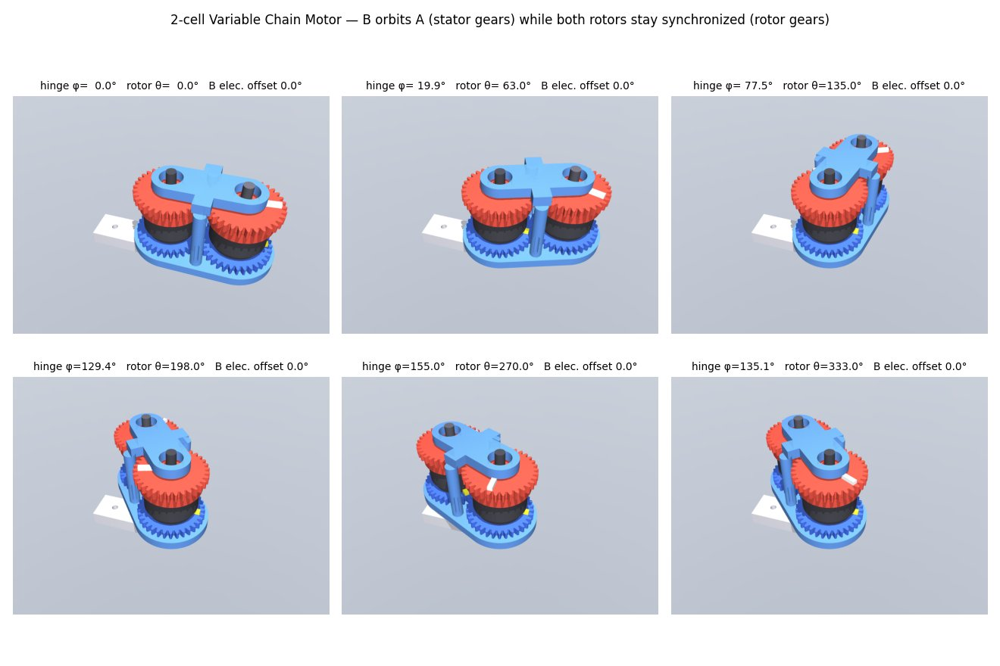
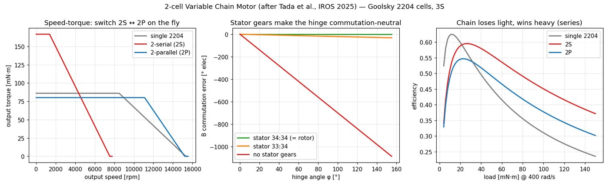
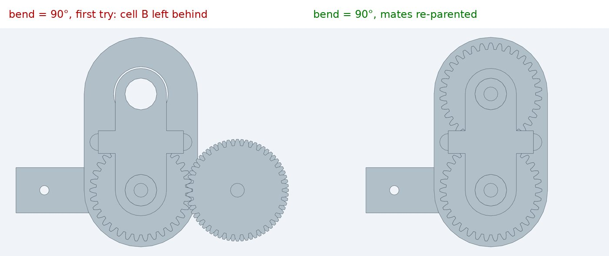

What happened
text-to-cad is the popular way to get an AI agent to do CAD right now: about 16k stars in five months, MIT licensed, and a bundle of thirteen agent skills (CAD, a viewer, DfAM checks, drawings, URDF, G-code, and more) on top of a Python package called cadgen. My own actuator work runs on a smaller, homegrown setup: a few Claude Code skills around build123d, a physics model for each mechanism, and MuJoCo. I wanted to know whether I'm missing out. So I took one design, built it my way, then had Claude Code rebuild the same parts under text-to-cad's rules and run its tools on them, and compared what each one caught.
The test piece was a two-cell variable chain motor. It's from a 2025 IROS paper by Tada et al. at the University of Tokyo (doi:10.1109/IROS60139.2025.11246199). You put a spur gear on the rotor and the stator of an ordinary BLDC, mesh two of them, and they run as one motor from one driver and one encoder. The trick is the stator gears. The second motor hangs on a link that swings around the first, so the motor itself can bend around an elbow instead of sitting on one side of it. When it swings, its stator and rotor turn together, so commutation never notices. My version uses two 2204 drone motors, m1 34-tooth printed gears, and six printed parts. It's a good test because it has real kinematics (a planet gear on a fixed sun), a physics claim worth checking, and small printed features that can go wrong.

Both pipelines use the same CAD kernel, so this compares workflow, not modeling. text-to-cad and my setup both sit on build123d and OpenCASCADE. To keep it fair, the text-to-cad version reused my geometry functions unchanged, wrapped the way its skill says: one decorated model per file, outputs declared in decorators, an assembly with typed mates. Then I ran its checks, snapshots and printability tool the way its docs prescribe.
What my pipeline does
My loop is physics first. Each mechanism starts as a params dataclass and a model that answers "does this work at all" before there's any geometry. The CAD reads the same constants, and a MuJoCo sim loads the exported meshes on a real joint tree. For the chain motor, the model reproduces the paper's torque/speed table to within 0.2%. The sim treats the gear meshes as equality constraints and measures three things:
- The hinge is torque-neutral. With the output and hinge both held at stall, the hinge servo supplies 0.000 mN·m. Change one stator gear by a single tooth and it reads 0.401 mN·m, which is exactly what virtual work predicts.
- The second motor has to be wired backwards. The external mesh spins it the opposite way, so two of its phase leads must be swapped. With the swap, the output gets the sum of both motors. Without it, the two cancel to zero. The paper doesn't mention this, and it's the kind of thing you'd find with a smell of burning windings.
- Swinging the joint fast drags on the output. The second rotor turns twice the hinge angle in the world, so the output controller has to supply 2·I·φ̈ while the elbow accelerates. The sim matches the formula exactly.

None of that is geometry, and that's the point. The CAD side of my loop was thin: watertight, one body per part, a handful of design rules, and a pairwise overlap check across five hinge angles. That last one was an idea I'd taken from text-to-cad's docs earlier the same day.
What text-to-cad caught that I didn't
It found three real bugs in parts that had passed all my checks. The first came from the clearance query its docs point you toward. The other two came from its DfAM tool.
- Zero backlash. My overlap check reports touching as zero overlap, so it passed. text-to-cad's
closest_pointson the gear pairs reported 0.000 mm. I'd put the gears exactly one pitch diameter apart. My motor model assumed 0.1 mm of backlash per mesh while the CAD had none, and printed gears built like that bind. The fix opens the centre distance by j/(2·tan 20°), which gives 0.048 mm minimum clearance. - A 0.11 mm wall. Three M2 screw holes at r = 3.9 mm broke into the 6 mm bore of the fixed hub, and nearly did in the base (0.07 mm). The part was a perfectly valid watertight solid. The DfAM tool samples actual wall thickness and pointed straight at r ≈ 3.1 mm. The hub now ends in a hex that keys into the base, with one central M3 to hold it in.
- A rotor cap you can't print cleanly. I'd fused the 5 mm dowel into the gear cap, and the orientation search showed it needs 13–22% support whichever way you lay it down. Making the dowel a press-fit steel pin takes that to 0%. The same search told me which way up to print the stator gears and the upper link (flipped, with 0–0.7% support).
Its snapshot policy earned its keep too. The rule is simple: after every visible geometry change, render at least one image and actually look at it. Its snapshot tool produced a four-view review sheet in about 4 seconds, and section views in under 2.

Where it fell short for this job
The kinematics are for looking, not for checking. You can declare the whole gear train as data: four revolute mates plus two linear couplings. That drives pose sliders in its viewer, and it's a genuinely nice way to write down a mechanism. But the docs say it plainly: kinematics never move the geometry a model writes, and a static check only proves that one pose. To check overlap with the joint bent, you pose the parts yourself, exactly as I already do. Its overlap check at the rest pose gave the same answer as mine and took 31 seconds for 36 pairs.
Getting the mates right took three tries, and the wrong versions rendered without complaint. My first declaration hung the second motor's mate off the lower link plate, which moves only because its group is mated. At a 90° bend, the link swung and cell B stayed put, spinning in place. The fix was to name the moved group itself as the parent, and then do the same one level down for the rotor. No error either time. I only caught it because the snapshot policy made me look at the image, which is a point for the policy and a trap in the mate semantics.

There's no physics. It has robot-description exports (URDF, SDF) with careful rules about inertia, but nothing that runs dynamics. Nothing in it would have found the wiring reversal or the hinge coupling, and those are the findings that matter most for this motor.
The numbers
Timings are from a 28-core workstation that was busy with other things (load average around 15), so treat them as rough.
| text-to-cad | mine | |
|---|---|---|
| Setup | pip install 20 s, headless Chromium 34 s (261 MB), 821 MB venv | the existing repo venv |
| Build all parts, cold | ~28 s (7 parts + assembly, parallel daemon) | 15 s, sequential, no cache |
| Rebuild, nothing changed | 1.7 s (content-addressed cache) | 15 s every time |
| Rebuild after editing a shared constant | 8–10 s (all 8 models, correctly invalidated) | 15 s |
| Overlap check | 31 s, 36 pairs, one pose | 10 poses + gear clearance (whole CAD script 96 s) |
| Visual review | multi-view, section, posed, photographic in 2–11 s | MuJoCo montage + gif |
| Printability | wall thickness, overhang, orientation search | none |
| Physics / dynamics | none | model + MuJoCo checks |
The cache is real engineering. It tracks every imported file, so editing a shared helper correctly rebuilt all seven parts, and cadgen store why explains any rebuild. Its error messages were good too. My first assembly reused child labels, and the build refused with the exact fix: "names 2 occurrences — mate one of them by occurrence id, or give the groups distinct labels."
What I'm taking
I'm not switching. The two pipelines answer different questions. Mine asks whether the mechanism works: torque, commutation, what the controller will feel. text-to-cad asks whether the part can be made: clearances, walls, supports, how it looks from every side. For a chain motor the first question is the one that kills designs, but I'd have printed three bugs without the second.
So I'm borrowing the parts that paid off, all MIT:
- The DfAM tool, run on every printed STL. It's standalone and doesn't need the rest of cadgen.
- A clearance check across every mesh and running fit, not just overlap volume. Touching is exactly the failure a gear has.
- The snapshot rule. Look at a render after every visible change. And look at posed renders, not just rest poses.
The kinematics-as-data idea is tempting as a single source that could generate my MuJoCo joints. I'd want it to support closed loops and constraint checking before it replaced hand-written sim models, though.
The chain motor is in punkfab/robot-actuators under chain-motor/, with the three fixes in its README.